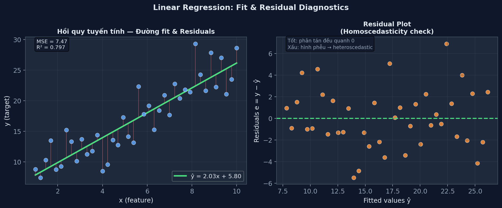
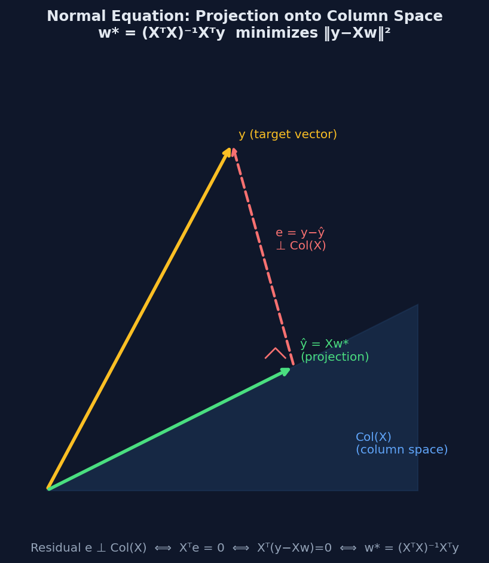
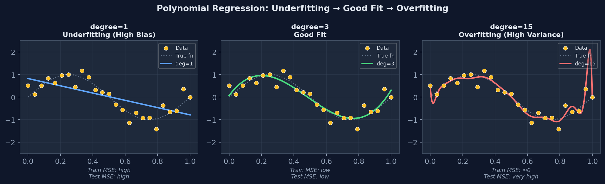
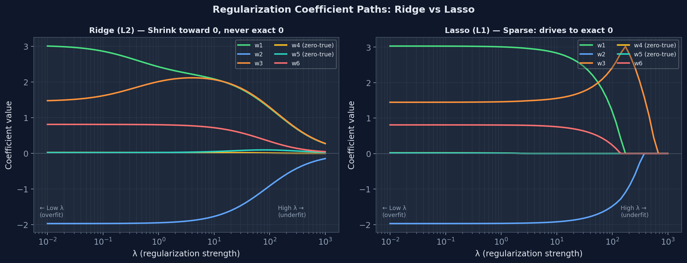

Linear Regression — Hồi Quy Tuyến Tính
Từ OLS và Normal Equation đến Gradient Descent, Polynomial Regression và Regularization.
Cho tập dữ liệu \(\{(\mathbf{x}^{(i)}, y^{(i)})\}_{i=1}^m\) với \(\mathbf{x} \in \mathbb{R}^n\). Mô hình dự đoán:
Viết gọn bằng cách augment: thêm \(x_0 = 1\) vào \(\mathbf{x}\), khi đó \(\hat{y} = \boldsymbol{\theta}^T \mathbf{x}\) với \(\boldsymbol{\theta} = [b, w_1, \ldots, w_n]^T\).
Hệ số \(1/2\) chỉ để đơn giản hoá đạo hàm (triệt tiêu số 2). Không ảnh hưởng vị trí cực tiểu.

Đặt đạo hàm \(\nabla_{\boldsymbol{\theta}} J = 0\):
Chứng minh Normal Equation
Viết \(J = \frac{1}{2m}(\mathbf{X}\boldsymbol{\theta} - \mathbf{y})^T(\mathbf{X}\boldsymbol{\theta} - \mathbf{y})\). Khai triển:
\[ J = \frac{1}{2m}\bigl(\boldsymbol{\theta}^T \mathbf{X}^T \mathbf{X}\boldsymbol{\theta} - 2\boldsymbol{\theta}^T \mathbf{X}^T \mathbf{y} + \mathbf{y}^T\mathbf{y}\bigr) \]Đạo hàm theo \(\boldsymbol{\theta}\):
\[ \nabla_{\boldsymbol{\theta}} J = \frac{1}{m}\bigl(\mathbf{X}^T \mathbf{X}\boldsymbol{\theta} - \mathbf{X}^T \mathbf{y}\bigr) = 0 \]Suy ra: \(\mathbf{X}^T \mathbf{X}\boldsymbol{\theta} = \mathbf{X}^T \mathbf{y}\) — gọi là normal equations. Nếu \(\mathbf{X}^T\mathbf{X}\) khả nghịch: \(\boldsymbol{\theta}^* = (\mathbf{X}^T \mathbf{X})^{-1} \mathbf{X}^T \mathbf{y}\). \(\blacksquare\)
| Phương pháp | Độ phức tạp | Ưu điểm | Nhược điểm |
|---|---|---|---|
| Normal Equation | \(O(n^3)\) — nghịch ma trận | Giải chính xác, không cần chọn learning rate | Chậm khi \(n\) lớn (>10,000 features) |
| Gradient Descent | \(O(mn \cdot \text{iter})\) | Tốt cho \(n\) rất lớn, linh hoạt | Cần tune learning rate, nhiều iteration |
| SVD / Pseudoinverse | \(O(mn^2)\) | Ổn định số, xử lý rank-deficient | Phức tạp hơn, không dùng khi \(n\) rất lớn |
Cập nhật lặp theo hướng gradient âm:
Với \(\alpha\) là learning rate. Ba biến thể:
| Biến thể | Batch size | Đặc điểm |
|---|---|---|
| Batch GD | Toàn bộ \(m\) | Gradient chính xác, chậm/epoch, hội tụ smooth |
| Stochastic GD (SGD) | 1 mẫu | Nhanh, noisy, có thể thoát local min |
| Mini-batch GD | 32–256 mẫu | Cân bằng tốc độ và ổn định; phổ biến nhất |
5. Ý Nghĩa Hình Học — Chiếu Lên Không Gian Con
Linear regression = chiếu vector \(\mathbf{y}\) lên column space của \(\mathbf{X}\).
Column space của \(\mathbf{X}\) là tập hợp tất cả tổ hợp tuyến tính của các cột \(\mathbf{X}\). Nghiệm \(\hat{\mathbf{y}} = \mathbf{X}\boldsymbol{\theta}^*\) là hình chiếu trực giao của \(\mathbf{y}\) lên không gian đó — vector residual \(\mathbf{e} = \mathbf{y} - \hat{\mathbf{y}}\) vuông góc với mọi cột của \(\mathbf{X}\).

Ma trận chiếu \(\mathbf{H} = \mathbf{X}(\mathbf{X}^T\mathbf{X})^{-1}\mathbf{X}^T\) thoả mãn:
- \(\hat{\mathbf{y}} = \mathbf{H}\mathbf{y}\) — dự đoán = chiếu y
- \(\mathbf{H}^2 = \mathbf{H}\) (idempotent) — chiếu hai lần = chiếu một lần
- \(\mathbf{H}^T = \mathbf{H}\) (symmetric)
- \(\text{tr}(\mathbf{H}) = n+1\) = rank(\(\mathbf{X}\)) = số tham số
6. Polynomial Regression — Hồi Quy Đa Thức
Fit đường cong phi tuyến bằng cách tạo feature mới từ powers của input.
Thêm feature \(x^2, x^3, \ldots, x^d\) vào ma trận design:
Mô hình phi tuyến trong input nhưng tuyến tính trong tham số — vẫn áp dụng được Normal Equation và Gradient Descent.

Giảm độ phức tạp: giảm variance nhưng tăng bias → underfitting.
Cần dùng cross-validation để chọn d tối ưu.
| Dấu hiệu | Underfitting (High Bias) | Overfitting (High Variance) |
|---|---|---|
| Training error | Cao | Thấp (gần 0) |
| Validation error | Cao (≈ training) | Rất cao (training ≪ val) |
| Gap train/val | Nhỏ | Lớn |
| Giải pháp | Tăng model complexity, thêm features | Regularization, thêm data, giảm features |
7. Regularization — Ridge, Lasso & Elastic Net
Thêm penalty vào loss để hạn chế magnitude của weights, giảm overfitting.
Nghiệm giải tích: \(\boldsymbol{\theta}^* = (\mathbf{X}^T\mathbf{X} + \lambda\mathbf{I})^{-1}\mathbf{X}^T\mathbf{y}\). Ma trận \(\mathbf{X}^T\mathbf{X} + \lambda\mathbf{I}\) luôn khả nghịch (ngay cả khi \(\mathbf{X}^T\mathbf{X}\) singular) → ổn định số.
Không có nghiệm giải tích (L1 không khả vi tại 0). Dùng coordinate descent hoặc subgradient. Đặc điểm quan trọng: tự chọn feature — nhiều weights bị đẩy về đúng 0.
Kết hợp cả L1 (sparse selection) và L2 (shrinkage ổn định). Tốt khi features tương quan cao với nhau.

| Ridge (L2) | Lasso (L1) | Elastic Net | |
|---|---|---|---|
| Penalty | \(\lambda\sum w_i^2\) | \(\lambda\sum |w_i|\) | \(\lambda_1\sum|w_i| + \lambda_2\sum w_i^2\) |
| Sparsity | Không (shrinks, not zero) | Có (exact zeros) | Có (ít hơn Lasso) |
| Nghiệm giải tích | Có | Không | Không |
| Khi nào dùng | Nhiều features đều có ích | Feature selection | Features tương quan cao |
| Với multicollinearity | Xử lý tốt (shrinks group) | Chọn 1 trong group | Giữ cả group |
8. Các Giả Thiết & Chẩn Đoán Mô Hình
OLS unbiased và BLUE khi các giả thiết Gauss-Markov được thỏa.
| # | Giả thiết | Ký hiệu | Vi phạm → hậu quả |
|---|---|---|---|
| 1 | Tuyến tính trong tham số | \(y = \mathbf{X}\boldsymbol{\theta} + \boldsymbol{\varepsilon}\) | Misspecification — bias |
| 2 | Không có multicollinearity hoàn hảo | rank(\(\mathbf{X}\)) = n+1 | \((\mathbf{X}^T\mathbf{X})\) singular, không nghịch được |
| 3 | Exogeneity: \(\mathbb{E}[\varepsilon|\mathbf{X}] = 0\) | Không có omitted variable | OLS biased, inconsistent |
| 4 | Homoskedasticity: \(\text{Var}(\varepsilon_i) = \sigma^2\) | Phương sai không đổi | OLS không hiệu quả (dùng WLS thay) |
| 5 | Không tương quan: \(\text{Cov}(\varepsilon_i, \varepsilon_j)=0\) | i ≠ j | Phương sai ước lượng sai (dùng GLS) |
Nếu 1–5 đúng: OLS là BLUE — Best Linear Unbiased Estimator (định lý Gauss-Markov).
| Độ đo | Công thức | Ý nghĩa |
|---|---|---|
| MSE | \(\frac{1}{m}\sum(y_i - \hat{y}_i)^2\) | Trung bình bình phương sai số; nhạy với outliers |
| RMSE | \(\sqrt{\text{MSE}}\) | Cùng đơn vị với y; dễ diễn giải |
| MAE | \(\frac{1}{m}\sum|y_i - \hat{y}_i|\) | Robust với outliers hơn MSE |
| R² | \(1 - \frac{\sum(y_i-\hat{y}_i)^2}{\sum(y_i-\bar{y})^2}\) | Tỷ lệ phương sai được giải thích; 1 = perfect |
| Adjusted R² | \(1 - (1-R^2)\frac{m-1}{m-n-1}\) | R² điều chỉnh cho số features; dùng khi so sánh model |
9. Tóm Tắt & Bẫy Thường Gặp
Những điểm hay ra trong đề thi và các lỗi phổ biến.
| Câu hỏi | Trả lời |
|---|---|
| Khi nào Normal Equation không dùng được? | Khi \(\mathbf{X}^T\mathbf{X}\) singular (multicollinear) hoặc n quá lớn (\(O(n^3)\)). Dùng Ridge hoặc GD thay. |
| Ridge vs Lasso: cái nào cho sparse solution? | Lasso (L1) cho sparse — weights = 0 chính xác. Ridge (L2) shrinks về 0 nhưng không bao giờ = 0 chính xác. |
| Feature scaling có cần cho Normal Equation không? | Không cần. Chỉ cần cho Gradient Descent. |
| R² có thể âm không? | Có — trên test set, nếu model tệ hơn cả dự đoán trung bình \(\bar{y}\). Trên training set với intercept thì R² ≥ 0. |
| Thêm một feature không liên quan: R² thay đổi thế nào? | R² không giảm (luôn ≥). Adjusted R² có thể giảm — dùng Adjusted R² để so sánh model nhiều features. |
| Tăng λ trong Ridge: bias và variance thay đổi thế nào? | Tăng λ → tăng bias, giảm variance. Giảm λ → giảm bias, tăng variance. |
- Nhầm MSE và RMSE: MSE = mean of squared errors; RMSE = căn MSE. Đơn vị: MSE = (đơn vị y)², RMSE = đơn vị y.
- Quên scale features khi so sánh magnitude của Ridge/Lasso weights.
- Normal Equation cho Lasso: KHÔNG tồn tại (L1 không khả vi tại 0).
- Nhầm \(\boldsymbol{\theta}^* = (\mathbf{X}^T\mathbf{X})^{-1}\mathbf{X}^T\mathbf{y}\) với \(\mathbf{X}^{-1}\mathbf{y}\): chỉ đúng nếu \(\mathbf{X}\) là ma trận vuông khả nghịch.
- Ridge penalty trên bias b: thực tế không regularize bias (chỉ regularize weights). Nhưng trong toán học, đôi khi viết gọn là regularize tất cả \(\boldsymbol{\theta}\).